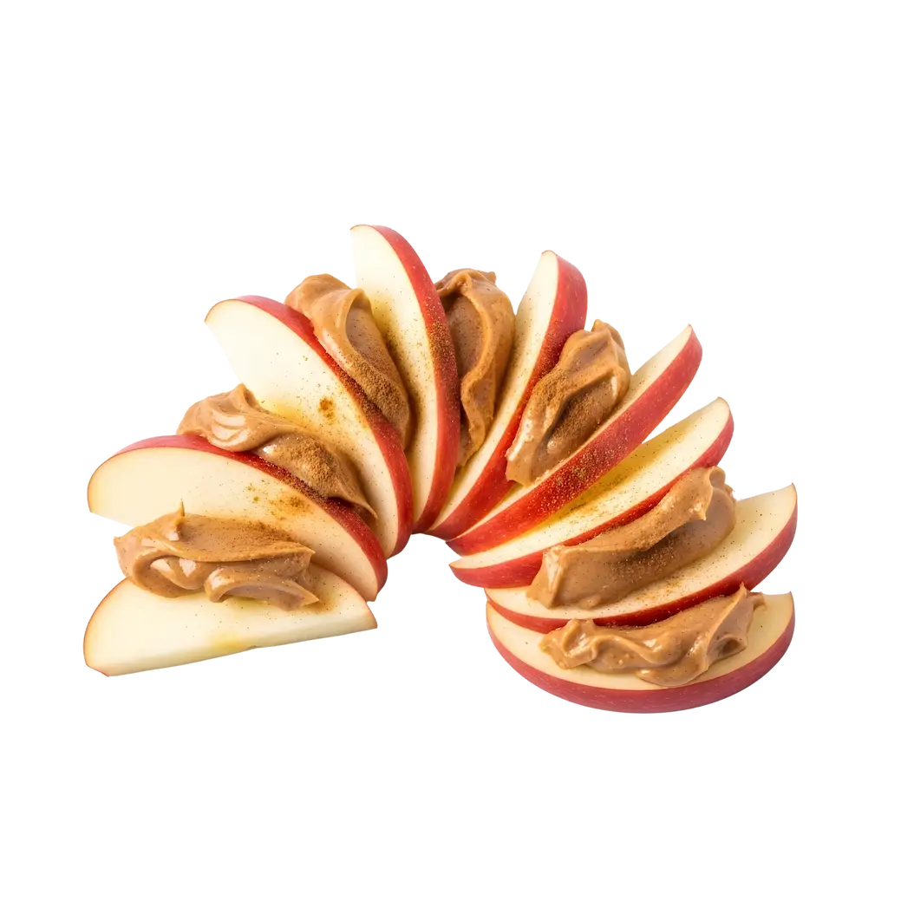

Bocaditos de Manzana y Mantequilla de Maní
Tiempo: 10 minutos · Dificultad: Muy Fácil · Porciones: 2 porciones

Preparación
- Lava bien las manzanas, retira el corazón con las semillas y córtalas en gajos o rodajas medianas.
- Pasa unas gotas de jugo de limón sobre la pulpa de la manzana para evitar que se oxide y mantenga su color fresco.
- Unta una porción generosa de mantequilla de maní sobre cada gajo de manzana.
- Coloca la granola o avena en un plato llano y presiona suavemente el lado con mantequilla de maní sobre la granola para que quede bien adherida.
- Acomoda los bocaditos en un plato, espolvorea un toque de canela en polvo por encima y agrega chispas de chocolate si lo deseas.
- Sirve de inmediato o mantén refrigerado unos minutos para disfrutar frío.
¡Un snack rápido, crujiente y recargado de energía natural!
Tips de nuestra comunidad
Descubre recetas, combinaciones y secretos compartidos por otros amantes de la cocina. ¿Tienes un secreto de cocina?
Compártelo con la comunidad.
Si sustituyes la mantequilla de maní por mantequilla de almendras y agregas semillas de chía, le da un toque diferente y súper nutritivo.
Usa manzanas Granny Smith (verdes); el contraste entre la acidez de la manzana y lo dulce de la mantequilla de maní es espectacular.